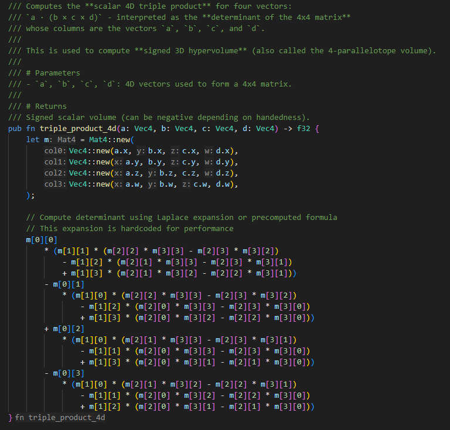
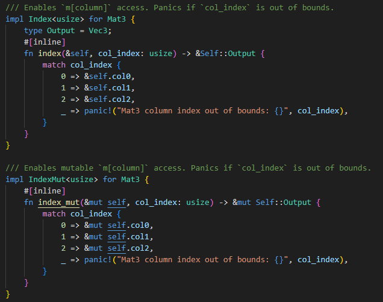
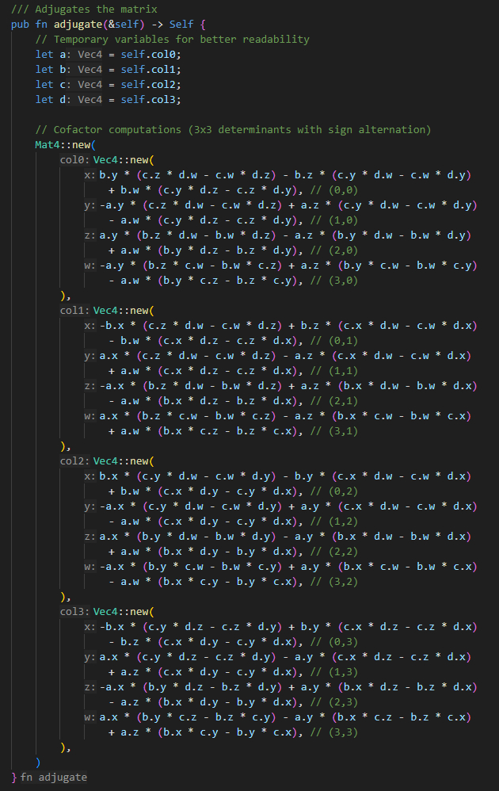

Omelet is a Rust based game math library that I started as a personal challenge and learning experience.
After becoming increasingly interested in Rust, I decided that building a math library from scratch would be
a great way to deepen my understanding of the language and its ecosystem. I also strongly believe that Rust
is on track to become a widely adopted language in the games industry, especially for systems and engine
programming.
The project has had its share of learning curves, particularly around Cargo's structure, linking workflows,
and
implementing complex math operations (like 4D transformations). These challenges have pushed me to explore
Rust
more deeply and refine my development workflow.
To date, I've implemented robust and comprehensive support for 2D, 3D and 4D vectors. The vector API is nearly
complete and already backed by an extensive suite of unit tests and documentaiton. SIMD optimisations are the
next step for performance enhancement.
Matrix types are now implemented with comprehensive support for 2x2, 3x3, and 4x4 matrices. Each matrix type
has it's own unique testing quite testing all edge cases, and all matrix types have extensive documentation.
SIMD optimisations again are the next step for performance enhancement.
The most recent addition to the library, is quaternions. These took some time for me to get my head around,
but as soon as I understood the core concepts, I quickly implemented all of the functionality I would need.
Quat's have extensive unit testing and full documentation, just like the previous types.
One of the most fun parts of the entire project, was making the README.md. I found this to be very relaxing
and interesting to look at other readMe's and compare them against mine. Something I don't have on the read
me,
as it is not required for a maths library, are images. So here I will show some of the code that went into
making
this library.



The project is now lives on crates.io.
There were some struggles getting the library published. Mainly with `cargo clippy` and formatting.
When I ran `cargo clippy`, I found there were 100s of errors from me not fully understanding correct
formatting and idiomatic Rust. Going through and fixing these errors and warnings really helped me understand
what data-oriented and idiomatic Rust were all about.
Long-term, I aim to use Omelet as the foundation for building a custom graphics renderer and eventually a
full featured game engine, complete with a physics system. I see this as not only a great way to solidify
my understanding of Rust, but also a way to demonstrate my skills in engine development, graphics programming
and low-level systems design.